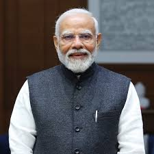

Narendra Modi vs Rahul Gandhi: Future PM?
As India approaches the 2025 Lok Sabha elections, the political atmosphere is charged. Two major figures — Narendra Modi, India's current Prime Minister, and Rahul Gandhi, the Congress leader — dominate the landscape. Their contrasting ideologies, leadership styles, and public images will determine the direction India takes.
Comparison: Narendra Modi vs Rahul Gandhi
| Category |  Narendra Modi | Rahul Gandhi |
|---|---|---|
| Political Party | BJP (Bharatiya Janata Party) | INC (Indian National Congress) |
| Position | Prime Minister of India | MP, Wayanad & Key Congress Leader |
| Leadership Style | Decisive, nationalist, strategic, often centralized | Empathetic, youth-centric, democratic, consultative |
| Ideology | Hindutva, development, strong central rule, economic reforms | Secularism, liberalism, grassroots democracy, welfare-driven growth |
| Support Base | Urban middle class, nationalists, business community, loyal BJP cadre | Farmers, students, minorities, liberal thinkers, welfare beneficiaries |
| Key Focus Areas | Economic growth, national security, foreign policy, infrastructure projects | Welfare, education, healthcare, inclusive economic policies |
Ideology and Vision
Narendra Modi believes in a strong, centralized government that ensures rapid economic growth and secures India’s national interests. His policies such as Make in India, Atmanirbhar Bharat, and welfare schemes like PM-Kisan showcase his mix of nationalism and development-oriented governance. Supporters view Modi as a leader who has transformed India's global image.
Rahul Gandhi champions an inclusive, secular vision that focuses on protecting democratic institutions and minority rights. He promises broader welfare programs for rural India and marginalized communities while opposing what he calls BJP's "authoritarian tendencies." Rahul’s message appeals to those who value collective decision-making and social justice.
Party Background
BJP under Modi has grown into a formidable election machine with vast cadre support from the RSS. The party’s narrative blends Hindutva with development, and it uses advanced digital campaigns to mobilize voters across urban and rural areas.
Congress, once India’s dominant political force, is attempting to rebuild its network. Rahul Gandhi’s focus is on rejuvenating the party's grassroots connections and uniting opposition parties to challenge BJP’s electoral dominance.
Leadership Journey
Narendra Modi rose from humble beginnings as a tea-seller to Chief Minister of Gujarat and then Prime Minister. His tenure is marked by landmark decisions like GST rollout, Article 370 abrogation, and major foreign policy initiatives, though critics cite unemployment and social polarization as unresolved challenges.
Rahul Gandhi entered politics in the early 2000s and has gradually become the face of Congress. Though accused of inconsistency earlier, his mass outreach programs like Bharat Jodo Yatra have improved his connect with the grassroots. He positions himself as a defender of India’s pluralism.
Public Support and Criticism
Modi commands a loyal base who see him as a strong, visionary leader. His decisive actions and global outreach have consolidated his image. Critics, however, argue that his government centralizes power and needs to address job creation and inflation more effectively.
Rahul Gandhi is popular among youth and minorities for his empathetic approach. However, detractors question his political acumen and ability to lead a fragmented opposition in high-stakes elections.
Final Thoughts
The 2025 elections will decide whether India continues with Modi’s assertive leadership and nationalist agenda or shifts toward Rahul Gandhi’s vision of inclusive governance and institutional revival. Voters will weigh a decade of BJP’s dominance against Congress’s promise of change.
For more detailed comparisons and political analysis, read our latest articles.